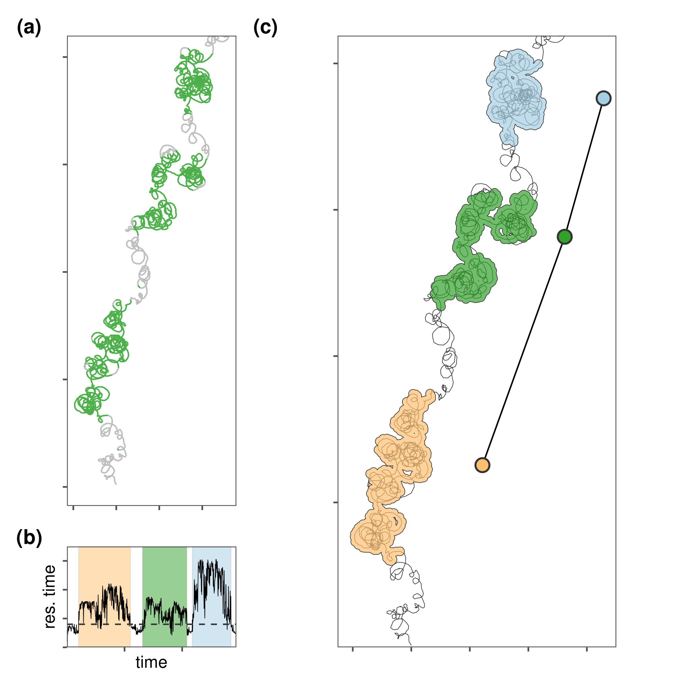

Section 5 Residence patches and their construction
Prepare libraries
5.1 An example with simulated data
5.1.1 Read data and classify
# read patch data
data <- fread("data/data_for_res_patch.csv")
# filter
data <- data[y < 21, ]
# do recurse
data_recurse <- getRecursions(data[, list(x, y, time, id)],
radius = 1)
# assign residence time
data[, residence_time := data_recurse$residenceTime]We first plot a figure of residence time per positions, and residence time per timestamp.
# restime by position
fig_res_a <-
ggplot()+
# geom_path(data = data,
# aes(x, y),
# lwd = 0.2,
# col = "grey20")+
geom_path(data = data,
aes(x, y,
group = NA,
col = residence_time > 0.04),
show.legend = F,
alpha = 1)+
coord_equal(ylim = c(NA, 20))+
scale_colour_manual(values = c("grey", pal[3]))+
# scale_shape_manual(values = c(, 1))+
ggthemes::theme_few()+
theme(axis.text = element_blank(),
axis.title = element_blank())We construct residence patches from data where residence time is > 0.15.
# make residence patch
patch <- atl_res_patch(data[residence_time > 0.04, ],
buffer_radius = 0.1,
lim_spat_indep = 1,
lim_time_indep = 30)
# get spatial representation
patch_sf <- atl_patch_summary(patch_data = patch,
which_data = "spatial",
buffer_radius = 0.15)
# get summary data
patch_summary <- atl_patch_summary(patch_data = patch,
which_data = "summary")5.1.2 Plot classified residence patches
# plot_patches <-
fig_res_b <-
ggplot()+
geom_path(data = data,
aes(x, y),
col = "grey20",
lwd = 0.2)+
scale_colour_manual(values = c("grey", pal[3]))+
geom_sf(data = patch_sf,
aes(fill = patch),
colour = "grey20",
alpha = 0.7,
lwd = 0.2,
show.legend = FALSE)+
geom_path(data = patch_summary,
aes(x_median + 3, y_median),
col = "grey0",
size = 0.5)+
geom_point(data = patch_summary,
aes(x_median + 3,
y_median,
fill = patch),
col = "grey20",
size = 4,
stroke = 1,
shape = 21,
show.legend = F)+
scale_fill_distiller(palette = "Paired")+
coord_sf(ylim = c(1, 20))+
ggthemes::theme_few()+
theme(axis.text = element_blank(),
axis.title = element_blank())
# res time by time
fig_res_c <-
ggplot()+
geom_rect(data = patch_summary,
aes(xmin = time_start,
xmax = time_end,
ymin = 0.0, ymax = 0.175,
fill = (patch)),
col = "grey",
lwd = 0.1,
alpha = 0.5,
show.legend = F)+
geom_path(data = data,
aes(time, residence_time,
group = NA),
lwd = 0.2,
show.legend = F)+
geom_hline(yintercept = 0.04,
col = "grey20",
lwd = 0.5,
lty = 2)+
scale_fill_distiller(palette = "Paired", direction = -1)+
scale_colour_manual(values = c("grey20", "darkgreen"))+
ggthemes::theme_few()+
theme(axis.text = element_blank())+
coord_fixed(expand = F,
ratio = 10000)+
labs(x = "time",
y = "res. time")We arrange the figures together.
fig_residence <-
wrap_plots(list(fig_res_a, fig_res_c, fig_res_b),
design = "ACC\nBCC")+
plot_annotation(tag_levels = "a",
tag_prefix = "(",
tag_suffix = ")") &
theme(plot.tag = element_text(face = "bold"))
# save the figure
ggsave(fig_residence,
filename = "figures/fig_residence.png",
height = 170 / 25, width = 170 / 25)